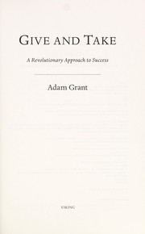
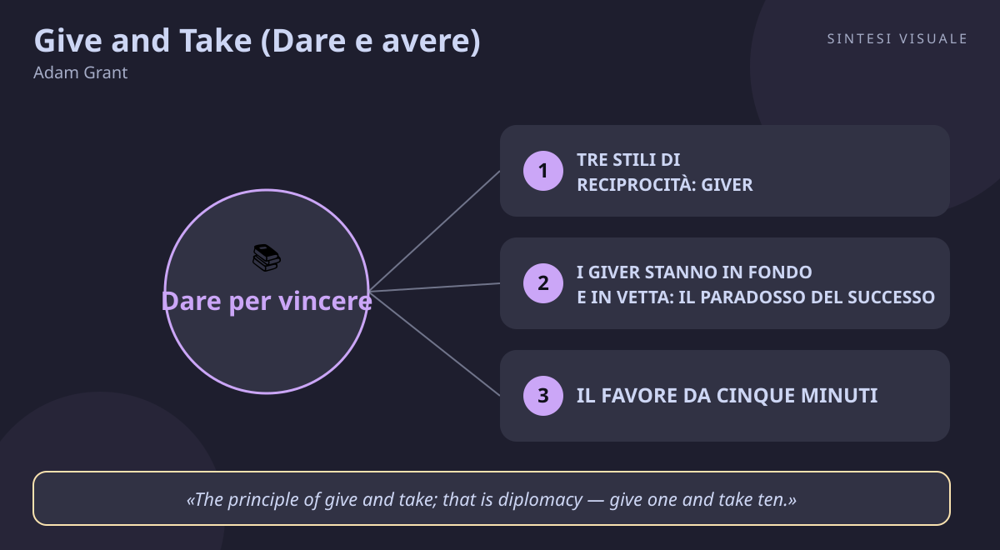

Home / Libri / Give and Take (Dare e avere)

Give and Take (Dare e avere)
Adam Grant · Carriera e successo
«Give and Take (Dare e avere)»
- Giver taker matcher
- Favore da cinque minuti
- Comunicazione umile
- Dare con confini
🧭Introduzione
Adam Grant è uno psicologo organizzativo e professore alla Wharton School: diventato il più giovane docente di ruolo della scuola e per anni il più apprezzato dagli studenti, ha dedicato la sua ricerca a una domanda scomoda: nel lavoro vince davvero chi pensa solo a se stesso? Give and Take, pubblicato da Viking nel 2013 (320 pagine), è diventato un bestseller del New York Times e del Wall Street Journal.
Perché questo libro conta oggi: sul lavoro sembra comandare la legge del più furbo — chi si prende il merito, chi non restituisce mai un favore. Grant dimostra con dati e storie che ad avere successo nel lungo periodo sono invece quelli che danno per primi, senza calcolare il tornaconto. È utile a chiunque costruisca una carriera fatta di relazioni: professionisti, venditori, manager, freelance e chiunque faccia networking senza ipocrisia.
📘Riassunto
La scintilla centrale: il successo professionale non dipende solo da talento, impegno e fortuna, ma dallo stile di reciprocità con cui trattiamo gli altri — dare, prendere o scambiare alla pari.
La struttura logica segue il percorso del libro: i tre stili di reciprocità e i loro rischi; come giver, taker e matcher costruiscono reti di contatti diverse; la collaborazione e il modo di dare (o rubare) il merito; come riconoscere il potenziale negli altri; la comunicazione umile che influenza più dell'arroganza; perché alcuni giver si bruciano e altri prosperano; come non farsi mettere i piedi in testa; e la chiusura con "azioni d'impatto" concrete per diventare giver senza farsi sfruttare.
Il punto di svolta è il paradosso centrale della ricerca di Grant: i giver popolano sia il fondo sia la vetta delle classifiche di successo. Alcuni generosi finiscono sfruttati e si spengono; gli altri — quelli che danno in modo intelligente — ottengono risultati straordinari in ogni settore. Una volta capito questo, smetti di chiederti "come posso vincere?" e inizi a chiederti "come posso far vincere anche gli altri?".
L'eredità oggi: Give and Take ha cambiato il modo di parlare di networking e leadership, anticipando i temi dei libri successivi di Grant (Originals, Think Again). Il "favore da cinque minuti" è diventato una pratica diffusa nelle community professionali di tutto il mondo.
💡Concetti chiave
- Tre stili di reciprocità: giver, taker e matcher — ognuno di noi ha uno stile dominante nel dare e prendere.
- I giver stanno in fondo e in vetta: la generosità da sola non basta, è il modo di darla che decide se bruci o se vinci.
- Il favore da cinque minuti: piccoli aiuti a costo quasi zero che costruiscono reti e reputazione.
- La forza della comunicazione umile: mostrarsi vulnerabili convince più che ostentare sicurezza.
- Concentra il dare, fallo alle tue condizioni: raggruppa la generosità e proteggi tempo ed energie.
- Riconosci i taker e non farti sfruttare: generosity con gli occhi aperti, credito condiviso e selettività.
📖1. Tre stili di reciprocità: giver, taker e matcher
- Definizione i taker entrano in ogni interazione cercando di prendere il più possibile e dare il meno possibile; i giver preferiscono contribuire — un'introduzione, un consiglio, una conoscenza — senza condizioni; i matcher tengono il conto ("io ti aiuto se tu aiuti me") e sono la maggioranza delle persone.
- Esempio in ufficio il taker si intesta il progetto di gruppo nella mail al capo, il matcher aiuta solo chi gli deve un favore, il giver condivide un contatto utile con un collega senza aspettarsi nulla.
- Come applicarlo fai il primo passo con onestà — chiediti "nella maggior parte delle situazioni, come tratto gli altri?". Chiedi anche un parere a due o tre colleghi fidati: sul sito del libro c'è un test gratuito di autovalutazione, ma basta già lo specchio degli altri.
- Errore comune credersi giver perché si è gentili a parole, mentre nei fatti si tiene il registro dei favori come un matcher — o peggio, si prende spacciandolo per generosità.
- Collegamento Robert Cialdini (Le armi della persuasione, già trattato in questa rubrica): la reciprocità è una leva potentissima, e i matcher ne sono la prova vivente.
📖2. I giver stanno in fondo e in vetta: il paradosso del successo
- Definizione secondo le ricerche di Grant, le persone più generose sono sovrarappresentate sia tra gli insuccessi sia tra i grandi successi: dare senza criterio porta a essere sfruttati, dare con intelligenza moltiplica risultati e reputazione.
- Esempio due colleghi disponibili allo stesso modo: il primo dice sempre sì e finisce sommerso dal lavoro altrui; il secondo aiuta molto ma solo dove aggiunge valore unico, e diventa il punto di riferimento del team — promosso per primo.
- Come applicarlo dai dove il tuo aiuto vale di più e costa di meno (vedi il concetto 3), e misura: se la tua generosità ti lascia svuotato, non è il dare il problema, è il modo in cui lo distribuisci.
- Errore comune concludere "i buoni arrivano ultimi" osservando i giver ingenui, e passare al cinismo da taker — buttando via proprio il vantaggio competitivo della generosità intelligente.
- Collegamento Jim Collins e il concetto di umiltà + determinazione nei leader di successo; Dale Carnegie (Come trattare gli altri e farseli amici): l'interesse genuino per gli altri apre più porte di qualsiasi autopromozione.
📖3. Il favore da cinque minuti
- Definizione l'abitudine preferita di Grant, imparata dall'imprenditore Adam Rifkin: offrire qualcosa di valore unico a un'altra persona in cinque minuti o meno — una presentazione via mail, un feedback, una segnalazione, una raccomandazione su LinkedIn.
- Esempio leggi il pitch di un conoscente e gli mandi tre righe di feedback mirato; colleghi via mail due persone che hanno lo stesso problema, citando l'interesse comune. Cinque minuti per te, magari una svolta per loro.
- Come applicarlo fai tre o quattro favori da cinque minuti a settimana; tieni una lista di "mini-aiuti" possibili (conoscenze da condividere, articoli utili, feedback rapidi) così non devi inventarli ogni volta.
- Errore comune pensare di dover diventare Madre Teresa per essere giver, e quindi non fare nulla; oppure aiutare solo quando costa tantissimo, trasformando la generosità in sacrificio insostenibile.
- Collegamento la pratica del "pay it forward" diffusa nella Silicon Valley; Sonja Lyubomirsky e gli studi sulla felicità: aiutare gli altri in modo mirato aumenta energia e soddisfazione.
📖4. La forza della comunicazione umile
- Definizione chi parla da taker ostenta sicurezza e competenza ma allontana le persone; la comunicazione "senza potere" — ammettere limiti, chiedere consiglio, mostrarsi vulnerabili — umanizza e crea connessione autentica, quindi influenza di più.
- Esempio Grant racconta di sé: a venticinque anni, invitato a insegnare leadership a ufficiali dell'Aeronautica molto più grandi di lui, esordì snocciolando i titoli e ricevette giudizi pessimi ("c'era più conoscenza in platea che sul palco"). L'anno dopo aprì con autoironia — "so cosa state pensando: cosa posso imparare da un professore di dodici anni?" — e la sala rise e lo seguì.
- Come applicarlo nelle richieste, sostituisci l'elenco dei motivi per cui dovrebbero aiutarti con ammirazione sincera e una domanda precisa ("ammiro il tuo lavoro su X, potresti darmi cinque minuti su questo punto?"). Lascia all'altro il potere di sentirsi competente.
- Errore comune scambiare l'umiltà per debolezza e aprire ogni trattativa sparando certezze; oppure usare la vulnerabilità come teatrino calcolato — la gente fiuta in fretta la differenza tra umiltà vera e finta.
- Collegamento l'effetto "pratfall" studiato da Elliot Aronson (l'esperto che rovescia il caffè addosso piace di più); Abraham Lincoln, che in un dibattito rispose all'accusa di essere "falso" con una battuta su se stesso e conquistò la platea.
📖5. Concentra il dare, fallo alle tue condizioni
- Definizione i giver che prosperano non aiutano chiunque in qualsiasi momento: danno in modo proattivo e raggruppato — un giorno alla settimana dedicato agli aiuti invece di gocce sparse ogni giorno — e scelgono forme di aiuto che trovano significative.
- Esempio invece di rispondere a ogni richiesta appena arriva (e interrompere il lavoro dieci volte al giorno), riservi il mercoledì pomeriggio a mentoring, presentazioni e feedback: aiuti di più, senti davvero l'impatto e gli altri quattro giorni lavori in pace.
- Come applicarlo stabilisci un "giorno del dare" settimanale; definisci in anticipo che tipo di aiuto ti piace dare (contatti? feedback? consigli tecnici?) e proponilo tu per primo, invece di subire le richieste altrui.
- Errore comune la trappola del giver reattivo — aiutare chiunque chieda e trascurare se stessi, fino al burnout — e poi dare la colpa alla generosità invece che alla mancanza di confini.
- Collegamento Cal Newport (Deep Work, già trattato in questa rubrica): proteggere blocchi di tempo concentrato; Greg McKeown (Essentialism): dire dei no selettivi per dire dei sì che contano.
📖6. Riconosci i taker e non farti sfruttare
- Definizione essere giver non significa fare da zerbino: i giver di successo individuano i taker, condividono il merito con precisione (così nessuno può rubarlo) e danno fiducia in modo verificabile, premiando i comportamenti generosi e frenando quelli egoistici.
- Esempio un collega che chiede sempre aiuto ma sparisce quando tocca a lui, e nelle riunioni dice "io" invece di "noi": smetti di offrirgli corsie preferenziali, documenta i contributi di ciascuno nel progetto e osserva se ricambia prima di investire ancora.
- Come applicarlo guarda i segnali (parla più di prendere o di dare? ringrazia? condivide il merito?), dai credito in pubblico a chi lo merita — è la migliore assicurazione contro i furti di merito — e sii generoso per primo con i nuovi arrivati, ma osserva la risposta prima di insistere.
- Errore comune due opposti — fidarsi ciecamente di tutti e farsi spolpare, oppure, dopo una fregatura, diventare cinici e smettere di dare a chiunque, compresi i giver onesti.
- Collegamento la strategia del "generous tit-for-tat" dalla teoria dei giochi (collabora per primo, poi ricambia ciò che ricevi); Enron e Kenneth Lay nel libro: i sistemi ciechi ai taker crollano, e riconoscerli in tempo salva intere aziende.
💬Citazioni da ricordare
"Being a giver is not good for a 100-yard dash, but it's valuable in a marathon." — Conta perché riassume tutto il libro in una frase: la generosità perde gli scatti brevi e vince le maratone della carriera.
"The principle of give and take; that is diplomacy — give one and take ten." — Conta perché è l'epigrafe del primo capitolo, attribuita a Mark Twain: è la fotografia perfetta della mentalità taker contro cui il libro argomenta.
"The fear of being judged as weak or naive prevents many people from operating like givers at work." — Conta perché nomina il vero ostacolo: non è che dare non funzioni, è che abbiamo paura di sembrare deboli se diamo per primi.
I giver popolano sia il fondo sia la vetta del successo: la differenza non è quanto dai, ma come lo dai. E il favore da cinque minuti dimostra che non serve essere eroi per essere generosi: bastano modi semplici per aggiungere grande valore alla vita degli altri a un costo minimo per te.
🌍Esempi di oggi
- Il collega che presenta due persone in azienda — Colleghi via mail due reparti che non si parlano e risolvono un problema in un giorno. Cinque minuti tuoi, un progetto sbloccato: è il favore da cinque minuti che costruisce la tua reputazione più di qualsiasi autopromozione.
- Il freelance che condivide il merito col cliente — Invece di intestarti tutto il risultato, nel report scrivi "il team del cliente ha fornito i dati decisivi": il cliente ti richiama e ti raccomanda. Dare credito è la mossa da giver che i taker non capiranno mai.
- La richiesta di lavoro che funziona — Scrivi a un professionista che ammiri senza elencare i tuoi titoli, ma con una domanda precisa sul suo campo e cinque minuti di tempo chiesto con garbo. L'umiltà mirata apre porte che l'arroganza lascia chiuse.
🛠️Azioni pratiche
- Fai tre favori da cinque minuti: presenta due persone via mail, dai un feedback utile, segnala un'opportunità a qualcuno. Costa quindici minuti in tutto, e osserva cosa succede.
- Prova la comunicazione umile: nella prossima richiesta difficile, apri con ammirazione sincera e una domanda precisa invece che con le tue credenziali. Nota la differenza nella risposta.
- Stabilisci il tuo "giorno del dare": scegli un pomeriggio a settimana per mentoring, favori e risposte in sospeso; negli altri giorni proteggi il tuo tempo senza sensi di colpa.
💎Da portare a casa
Il successo è una maratona di relazioni: chi dà per primo, con intelligenza e confini chiari, arriva più lontano di chi prende sempre.
Vuoi approfondire? Rispondi in chat con il numero del concetto (1–6) che vuoi esplorare — stili di reciprocità, paradosso dei giver, favore da cinque minuti, comunicazione umile, dare raggruppato o difesa dai taker — oppure chiedimi come applicare il metodo a una tua situazione reale: carriera, networking, trattative o gestione del team.
🖼️In un colpo d’occhio

Tocca l’immagine per ingrandirla.